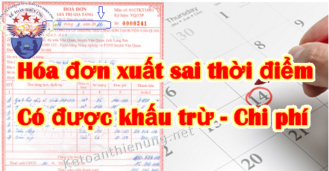

Hóa đơn xuất sai thời điểm có được khấu trừ thuế GTGT đầu vào - Có được đưa vào chi phí được trừ? Thế nào là xuất hoá đơn sai thời điểm? Kế toán Diệu Tâm xin tổng hợp các quy định về các vấn đề đó.
Trước khi đọc bài viết này, nêu bạn chưa biết thời điểm xuất hoá đơn là ngày nào? Thế nào là xuất hoá đơn sai thời điểm...
=> Bạn có thể xem thêm tại đây nhé: Thời điểm xuất hoá đơn.
-------------------------------------------------------------------------------
Theo Công văn 2104/TCT-KK ngày 06/06/2014 của Tổng cục thuế:
"Căn cứ hướng dẫn nêu trên, trường hợp Ban quản lý dự án Xây dựng phòng thí nghiệm Dioxin mua hàng hóa từ các nhà cung cấp (trang thiết bị, vật tư sử dụng để nghiên cứu). Tuy nhiên, do nguyên nhân khách quan làm chậm thanh toán tiền hàng dẫn đến nhà cung cấp không xuất hóa đơn GTGT khi giao hàng/thanh lý hợp đồng thì Ban quản lý được kê khai, hoàn thuế đối với những hóa đơn GTGT hàng hóa mua vào do người bán lập sai thời điểm nếu các hóa đơn này có đủ điều kiện khấu trừ theo quy định.
-> Các đơn vị cung cấp hàng hóa cho Ban quản lý dự án bị xử phạt về hành vi sử dụng hóa đơn.
Đề nghị Cục Thuế thành phố Hà Nội phối hợp, chỉ đạo các đơn vị có liên quan về việc xuất hóa đơn chưa đúng quy định nêu trên để xử phạt.
Tổng cục Thuế trả lời để Cục Thuế thành phố Hà Nội được biết và thực hiện./."
-----------------------------------------------------------------------------------------
Công văn số 5572/CT-TTHT ngày 14/2/2020 của Cục Thuế TP. Hà Nội:
Căn cứ các quy định nêu trên trên, trường hợp Công ty TNHH ZTE HK (Việt Nam) có ký hợp đồng cung cấp thiết bị viễn thông với Công ty CP thiết bị bưu điện, hàng hóa đã được Công ty ZTE bàn giao từ tháng 12/2019 nhưng đến tháng 01/2020 Công ty mới xuất hóa đơn GTGT là không đúng quy định. Công ty ZTE bị xử phạt vi phạm hành chính trong lĩnh vực thuế, bị xử phạt vi phạm lập hóa đơn không đúng thời điểm theo quy định tại Thông tư số 10/2014/TT-BTC nêu trên.
Đối với bên mua hàng hóa dịch vụ, nếu việc mua hàng hóa, dịch vụ đúng thực tế, có đầy đủ hóa đơn, chứng từ và đáp ứng điều kiện quy định tại Điều 15 Thông tư 219/2013/TT-BTC (đã được sửa đổi, bổ sung theo Thông tư số 119/2014/TT-BTC ngày 25/8/2014, Thông tư số 151/2014/TT-BTC ngày 10/10/2014, Thông tư số 26/2015/TT-BTC ngày 27/02/2015 của Bộ Tài chính, Thông tư số 173/2016/TT-BTC ngày 28/10/2016 của Bộ Tài chính) thì được khấu trừ thuế GTGT đầu vào theo quy định.
-----------------------------------------------------------------------------------------
Theo Công văn 74116/CT-TTHT ngày 2/12/2016 của Cục Thuế TP. Hà Nội:"- Trường hợp Công ty cung cấp dịch vụ cho khách hàng, việc cung ứng dịch vụ đã hoàn thành từ năm 2014 nhưng khi hoàn thành dịch vụ Công ty không lập hóa đơn mà lập vào năm 2015 cùng doanh thu dịch vụ năm 2015 là không đúng quy định.
-> Công ty bị xử phạt vi phạm hành chính trong lĩnh vực thuế, bị xử phạt vi phạm lập hóa đơn không đúng thời điểm theo quy định tại Thông tư số 10/2014/TT-BTC.
-> Công ty được khai bổ sung hồ sơ khai thuế vào kỳ khai thuế hoàn thành cung cấp dịch vụ năm 2014 nhưng phải trước khi cơ quan thuế, cơ quan có thẩm quyền công bố quyết định kiểm tra thuế, thanh tra thuế tại trụ sở người nộp thuế.
- Đối với bên mua hàng hóa dịch vụ, nếu việc mua hàng hóa, dịch vụ đúng thực tế, có đầy đủ hóa đơn, chứng từ và đáp ứng điều kiện quy định tại Khoản 8 Điều 14 Thông tư 219/2013/TT-BTC nêu trên thì được khấu trừ thuế GTGT đầu vào theo quy định.
Trong quá trình thực hiện nếu còn vướng mắc, đề nghị Công ty liên hệ với Phòng Kiểm tra thuế số 4 để được hướng dẫn cụ thể.
Cục thuế TP Hà Nội trả lời để Công ty được biết và thực hiện./."
------------------------------------------------------------------------------------------------
Công văn 76600/CT-TTHT NGÀY 19/11/2018 của Cục thuế TP Hà Nội:
"- Trường hợp Công ty mua hàng hóa, dịch vụ mà bên bán lập hóa đơn không đúng thời điểm quy định tại Điểm a Khoản 2 Điều 16 Thông tư số 39/2014/TT-BTC ngày 31/3/2014 của Bộ Tài chính, nếu việc mua hàng hóa, dịch vụ đúng thực tế, có đầy đủ hóa đơn, chứng từ và đáp ứng điều kiện quy định tại Điều 15 Thông tư 219/2013/TT-BTC (đã được sửa đổi, bổ sung theo Thông tư số 119/2014/TT-BTC ngày 25/8/2014, Thông tư số 151/2014/TT-BTC ngày 10/10/2014, Thông tư số 26/2015/TT-BTC ngày 27/02/2015 của Bộ Tài chính, Thông tư số 173/2016/TT-BTC ngày 28/10/2016 của Bộ Tài chính), đồng thời các hóa đơn GTGT này đã được bên bán kê khai, nộp thuế đầy đủ, số tiền thuế GTGT tại các hóa đơn GTGT nêu trên là thuế GTGT đầu vào của hàng hóa, dịch vụ sử dụng cho sản xuất, kinh doanh hàng hóa, dịch vụ chịu thuế của Công ty thì Công ty được khấu trừ thuế GTGT đầu vào theo quy định.
- Trường hợp qua xác minh nếu cơ quan thuế phát hiện Công ty không đáp ứng đủ các điều kiện nêu trên thì Công ty không được kê khai, khấu trừ thuế GTGT đầu vào của các hóa đơn này.
- Trường hợp sau khi hết hạn nộp hồ sơ khai thuế theo quy định, đơn vị phát hiện hồ sơ khai thuế đã nộp cho cơ quan thuế có sai sót thì được khai bổ sung hồ sơ khai thuế. Hồ sơ khai thuế bổ sung được nộp cho cơ quan thuế vào bất cứ ngày làm việc nào, không phụ thuộc vào thời hạn nộp hồ sơ khai thuế của lần tiếp theo, nhưng phải trước khi cơ quan thuế, cơ quan có thẩm quyền công bố quyết định kiểm tra thuế, thanh tra thuế tại trụ sở người nộp thuế."
------------------------------------------------------------------------
Theo Công văn 2731/TCT-CS ngày 20/6/2016 của Tổng cục thuế:
"Căn cứ hướng dẫn nêu trên, trường hợp Công ty TNHH KMW Việt Nam mua nguyên vật liệu chính của nhà cung cấp trong tháng 1/2016 để phục vụ sản xuất kinh doanh nhưng nhà cung cấp không lập hóa đơn khi giao nguyên vật liệu trong tháng 01/2016 mà tập hóa đơn vào tháng 02/2016.
-> Công ty có các hồ sơ, tài liệu: báo giá, hợp đồng kinh tế và biên bản bàn giao trong tháng 1/2016 thì đề nghị Cục Thuế tỉnh Hà Nam kiểm tra thực tế việc mua bán hàng hóa của Công ty để có cơ sở hướng dẫn Công ty tính vào chi phí được trừ khi xác định thu nhập chịu thuế TNDN đối với số hóa đơn nêu trên nếu đáp ứng các điều kiện theo quy định và phối hợp với cơ quan thuế quản lý nhà cung cấp để xử phạt vi phạm hành chính đối với hành vi lập hóa đơn không đúng thời điểm.
Tổng cục Thuế trả lời Cục Thuế tỉnh Hà Nam biết."
----------------------------------------------------------------------------
Công văn số 2866/CT-TTHT ngày 18/1/2019 của Cục Thuế TP. Hà Nội:
"- Trường hợp Công ty mua hàng hóa, dịch vụ mà bên bán lập hóa đơn không đúng thời điểm quy định tại Điểm a Khoản 2 Điều 16 Thông tư số 39/2014/TT-BTC ngày 31/3/2014 của Bộ Tài chính, nếu việc mua hàng hóa, dịch vụ để phục vụ hoạt động sản xuất, kinh doanh; đúng thực tế; có đầy đủ hóa đơn, chứng từ; Công ty có chứng từ thanh toán không dùng tiền mặt (nếu có hóa đơn mua hàng hóa, dịch vụ từng lần có giá từ 20 triệu đồng trở lên) thì Công ty được tính vào chi phí được trừ khi xác định thu nhập chịu thuế TNDN đối với số hóa đơn nêu trên.
- Trường hợp qua xác minh nếu cơ quan thuế phát hiện Công ty không đáp ứng đủ các điều kiện nêu trên thì Công ty không được tính vào chi phí được trừ khi xác định thu nhập chịu thuế TNDN đối với số hóa đơn này.
- Đối với bên bán hàng hóa, dịch vụ: Bị xử phạt vi phạm hành chính trong lĩnh vực thuế, bị xử phạt vi phạm lập hóa đơn không đúng thời điểm theo quy định tại Thông tư số 10/2014/TT-BTC."
"- Trường hợp Công ty mua hàng hóa, dịch vụ mà bên bán lập hóa đơn không đúng thời điểm quy định tại Điểm a Khoản 2 Điều 16 Thông tư số 39/2014/TT-BTC ngày 31/3/2014 của Bộ Tài chính, nếu việc mua hàng hóa, dịch vụ để phục vụ hoạt động sản xuất, kinh doanh; đúng thực tế; có đầy đủ hóa đơn, chứng từ; Công ty có chứng từ thanh toán không dùng tiền mặt (nếu có hóa đơn mua hàng hóa, dịch vụ từng lần có giá từ 20 triệu đồng trở lên) thì Công ty được tính vào chi phí được trừ khi xác định thu nhập chịu thuế TNDN đối với số hóa đơn nêu trên.
- Trường hợp qua xác minh nếu cơ quan thuế phát hiện Công ty không đáp ứng đủ các điều kiện nêu trên thì Công ty không được tính vào chi phí được trừ khi xác định thu nhập chịu thuế TNDN đối với số hóa đơn này.
- Đối với bên bán hàng hóa, dịch vụ: Bị xử phạt vi phạm hành chính trong lĩnh vực thuế, bị xử phạt vi phạm lập hóa đơn không đúng thời điểm theo quy định tại Thông tư số 10/2014/TT-BTC."
-----------------------------------------------------------------------------------------
Kết luận: Hóa đơn xuất sai thời điểm:
- Bên mua: Hóa đơn lập sai thời điểm sẽ được đưa vào chi phí khi tính thuế TNDN và kê khai khấu trừ thuế GTGT đầu vào, với điều kiện: Việc mua bán là đúng thực tế; Có hóa đơn, chứng từ thanh toán đầy đủ; Bên bán đã kê khai, nộp thuế đầy đủ.)
- Bên bán: Sẽ bị phạt về hành vi Lập hóa đơn sai thời điểm, tùy vào từng trường hợp mức phạt sẽ khác nhau:
+) Nếu lập hóa đơn sai thời điểm nhưng không dẫn đến chậm thực hiện nghĩa vụ thuế và có Tình tiết giảm nhẹ: => Phạt cảnh cáo.
+) Nếu lập hóa đơn sai thời điểm nhưng không dẫn đến chậm thực hiện nghĩa vụ thuế: => Phạt từ 3 - 5tr.
+) Nếu lập hóa đơn sai thời điểm (trừ 2 trường hợp trên): => Phạt từ 4 - 8tr.
-------------------------------------------------------------------------------------
Kế toán Diệu Tâm xin chúc các bạn thành công!
------------------------------------------------------------------------------
